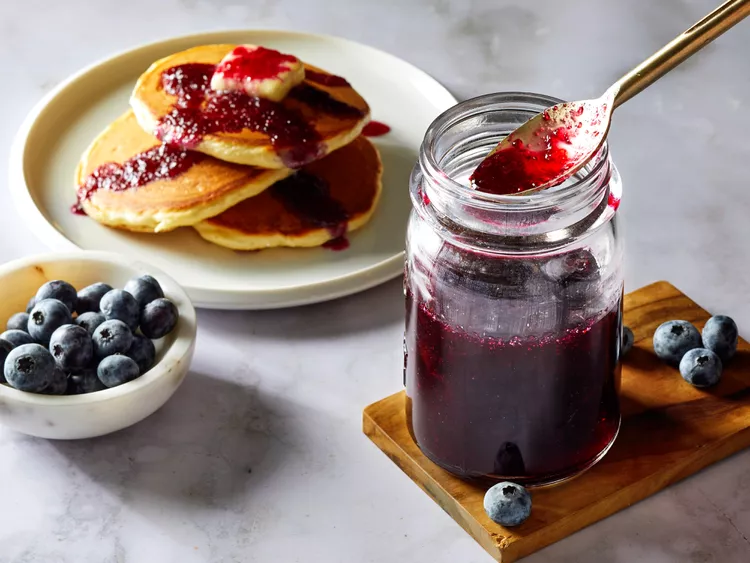

Blueberry Simple Syrup

This blueberry syrup is a flavored simple syrup that is very versatile and goes with so many things. I especially like to put it on top of French toast or in pancake or waffle batter. It's also very yummy in cornbread or biscuit batter. This can be made in advance and stored in a glass jar in the refrigerator.
Ingredients
- 1 cup blueberries
- 1 cup warm water
- 1 cup white sugar
- 1 teaspoon lemon juice
Steps
- Gather the ingredients.
- Mix blueberries, water, and sugar together using a whisk in a small saucepan over low heat until sugar is dissolved, about 5 minutes. Increase heat to medium and bring a gentle boil, stirring often, until syrup is thickened, about 15 minutes.
- Whisk lemon juice into syrup; serve immediately or cool.
Home